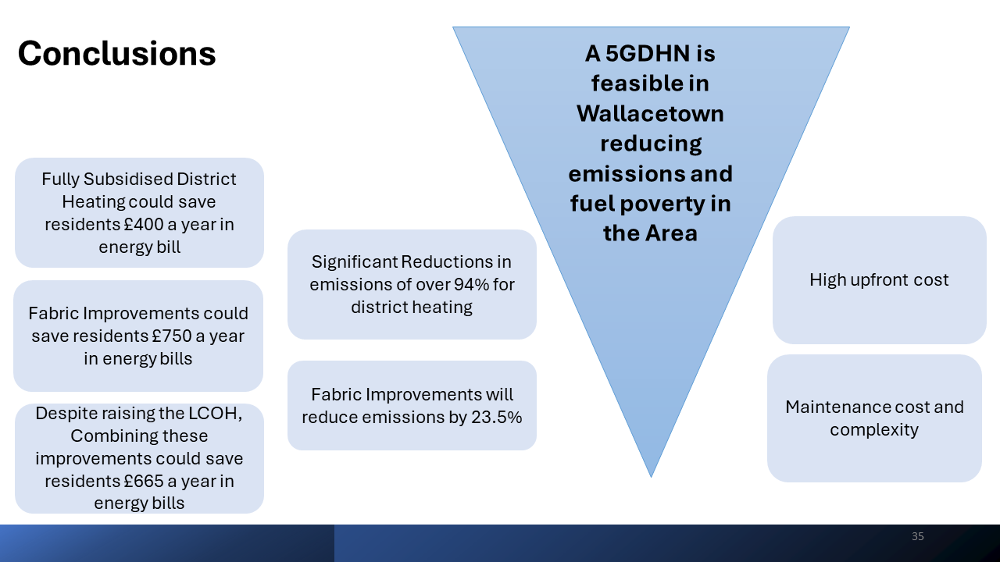

Conclusions

Simplifying a system helps to reduce initial capital cost and continuous maintenance costs, but it is always a trade off, in this case removing a solar source increased the consumer cost as a direct effect, and removing the large amounts of storage caused significant fluctuations in the system efficiency.
Combining these improvements could save residents an average of 650 pounds a year in energy bills and over 90 percent in emission reductions almost instantaneously. This is all assuming a full uptake, which is a large consideration but is more for comparison between scenarios. There are some cons, however, with the high upfront cost and the maintenance costs and complexity of the system itself. Something that I would say to that is the replenishment of heat in the ground i.e., if you're due to the high heat density of the area, the ground can actually get colder over time. So having an external source like the river or the solar thermal really contributes to balancing the energy. Therefore, in conclusion, a fifth-generation district heating network (5GDHN) is feasible in Wallacetown and reduces both emissions and fuel poverty in the area.
Further Work

There is support through the Scottish Heat Network Fund and now it can be used to investigate things further. It would be nice to visualize a comparison of our model against real systems. For example, looking at systems like West Whitlawburn; their demand profile was a lot higher than it was in reality. So, getting some real figures would be useful for that integration of anchor nondomestic loads that include shops and data centres. This could increase the peak power required for the system but is also likely to increase the efficiency of the system if sized properly due to increased cooling loads. With global warming, that's a factor in domestic situations as well. So, as I said earlier, finding economic analysis for Scotland rather than for European standards and the ground stability analysis of the mines, if there are any deep earthworks, then that'd be a big because the mine there is pre-1874, so it has no abandonment plan.